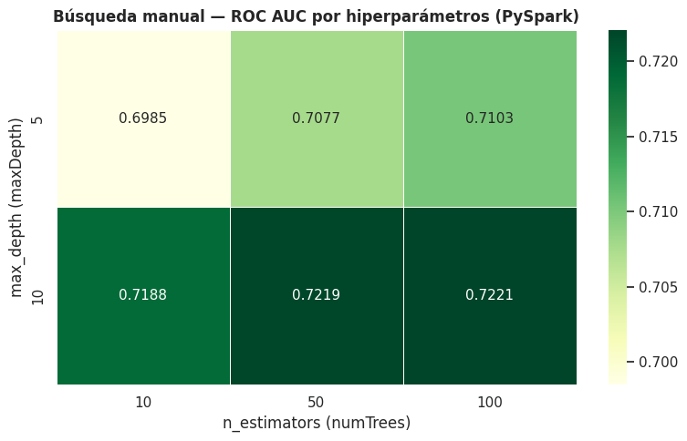
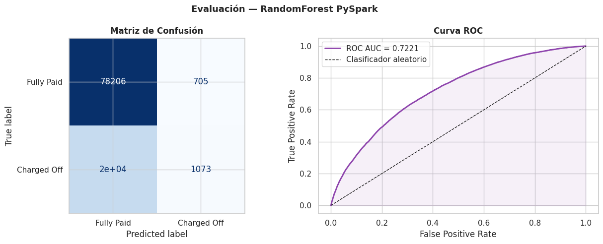
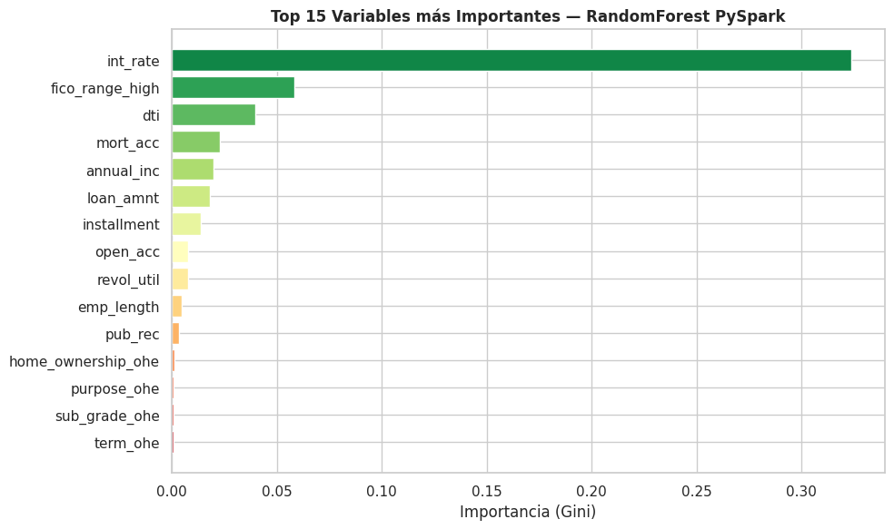

Preprocesamiento y Modelado con PySpark#
Librerías e Inicialización#
import time
import itertools
import pandas as pd
import numpy as np
import matplotlib.pyplot as plt
import seaborn as sns
from pyspark.sql import SparkSession
from pyspark.sql import functions as F
from pyspark.sql.types import StringType
from pyspark.ml import Pipeline
from pyspark.ml.feature import (StringIndexer, OneHotEncoder,
VectorAssembler, StandardScaler)
from pyspark.ml.classification import RandomForestClassifier
from pyspark.ml.evaluation import BinaryClassificationEvaluator, MulticlassClassificationEvaluator
sns.set_theme(style='whitegrid')
spark = (SparkSession.builder
.appName('LendingClub_PySpark')
.config('spark.driver.memory', '6g')
.config('spark.driver.maxResultSize', '2g')
.config('spark.sql.shuffle.partitions', '4')
.config('spark.executor.heartbeatInterval', '60s')
.config('spark.network.timeout', '300s')
.getOrCreate())
spark.sparkContext.setLogLevel('WARN')
print(f' SparkSession iniciada — Spark {spark.version}')
WARNING: Using incubator modules: jdk.incubator.vector
Using Spark's default log4j profile: org/apache/spark/log4j2-defaults.properties
26/03/09 20:28:21 WARN Utils: Your hostname, Sara, resolves to a loopback address: 127.0.1.1; using 10.255.255.254 instead (on interface lo)
26/03/09 20:28:21 WARN Utils: Set SPARK_LOCAL_IP if you need to bind to another address
Using Spark's default log4j profile: org/apache/spark/log4j2-defaults.properties
Setting default log level to "WARN".
To adjust logging level use sc.setLogLevel(newLevel). For SparkR, use setLogLevel(newLevel).
26/03/09 20:28:21 WARN NativeCodeLoader: Unable to load native-hadoop library for your platform... using builtin-java classes where applicable
SparkSession iniciada — Spark 4.1.1
Carga del Dataset#
sdf_raw = (spark.read
.option('header', 'true')
.option('inferSchema', 'false')
.csv('df_clean.csv'))
print(f'Columnas: {len(sdf_raw.columns)}')
sdf_raw.show(3)
Columnas: 93
26/03/09 20:28:24 WARN SparkStringUtils: Truncated the string representation of a plan since it was too large. This behavior can be adjusted by setting 'spark.sql.debug.maxToStringFields'.
+--------+---------+-----------+---------------+----------+--------+-----------+-----+---------+------------+----------+--------------+----------+-------------------+--------+----------+--------------------+------------------+------------------+--------+----------+-----+-----------+----------------+--------------+---------------+--------------+--------+-------+---------+----------+---------+-------------------+---------+-------------+-----------------+---------------+---------------+-------------+------------------+----------+-----------------------+------------+---------------+------------------+--------------------+-------------------+--------------------------+-----------+----------------+--------------+------------+-----------+----------------+--------------------+-----------+--------------+-------+------------------------+-----------+------------------+--------------------+---------------------+--------------+--------+--------------------+---------------------+---------------------+--------------+---------------+-----------+---------+---------+-------------+-------------+-------------------+--------+----------------+------------+------------------+------------------+--------------+----------------+--------------------+---------+---------------+-----------------+--------------+--------------------------+-------------+-------------------+--------------------+-------+
| id|loan_amnt|funded_amnt|funded_amnt_inv| term|int_rate|installment|grade|sub_grade| emp_title|emp_length|home_ownership|annual_inc|verification_status| issue_d|pymnt_plan| url| purpose| title|zip_code|addr_state| dti|delinq_2yrs|earliest_cr_line|fico_range_low|fico_range_high|inq_last_6mths|open_acc|pub_rec|revol_bal|revol_util|total_acc|initial_list_status|out_prncp|out_prncp_inv| total_pymnt|total_pymnt_inv|total_rec_prncp|total_rec_int|total_rec_late_fee|recoveries|collection_recovery_fee|last_pymnt_d|last_pymnt_amnt|last_credit_pull_d|last_fico_range_high|last_fico_range_low|collections_12_mths_ex_med|policy_code|application_type|acc_now_delinq|tot_coll_amt|tot_cur_bal|total_rev_hi_lim|acc_open_past_24mths|avg_cur_bal|bc_open_to_buy|bc_util|chargeoff_within_12_mths|delinq_amnt|mo_sin_old_il_acct|mo_sin_old_rev_tl_op|mo_sin_rcnt_rev_tl_op|mo_sin_rcnt_tl|mort_acc|mths_since_recent_bc|mths_since_recent_inq|num_accts_ever_120_pd|num_actv_bc_tl|num_actv_rev_tl|num_bc_sats|num_bc_tl|num_il_tl|num_op_rev_tl|num_rev_accts|num_rev_tl_bal_gt_0|num_sats|num_tl_120dpd_2m|num_tl_30dpd|num_tl_90g_dpd_24m|num_tl_op_past_12m|pct_tl_nvr_dlq|percent_bc_gt_75|pub_rec_bankruptcies|tax_liens|tot_hi_cred_lim|total_bal_ex_mort|total_bc_limit|total_il_high_credit_limit|hardship_flag|disbursement_method|debt_settlement_flag|default|
+--------+---------+-----------+---------------+----------+--------+-----------+-----+---------+------------+----------+--------------+----------+-------------------+--------+----------+--------------------+------------------+------------------+--------+----------+-----+-----------+----------------+--------------+---------------+--------------+--------+-------+---------+----------+---------+-------------------+---------+-------------+-----------------+---------------+---------------+-------------+------------------+----------+-----------------------+------------+---------------+------------------+--------------------+-------------------+--------------------------+-----------+----------------+--------------+------------+-----------+----------------+--------------------+-----------+--------------+-------+------------------------+-----------+------------------+--------------------+---------------------+--------------+--------+--------------------+---------------------+---------------------+--------------+---------------+-----------+---------+---------+-------------+-------------+-------------------+--------+----------------+------------+------------------+------------------+--------------+----------------+--------------------+---------+---------------+-----------------+--------------+--------------------------+-------------+-------------------+--------------------+-------+
|68407277| 3600.0| 3600.0| 3600.0| 36 months| 13.99| 123.03| C| C4| leadman| 10.0| MORTGAGE| 55000.0| Not Verified|Dec-2015| n|https://lendingcl...|debt_consolidation|Debt consolidation| 190xx| PA| 5.91| 0.0| Aug-2003| 675.0| 679.0| 1.0| 7.0| 0.0| 2765.0| 29.7| 13.0| w| 0.0| 0.0|4421.723916800001| 4421.72| 3600.0| 821.72| 0.0| 0.0| 0.0| Jan-2019| 122.67| Mar-2019| 564.0| 560.0| 0.0| 1.0| Individual| 0.0| 722.0| 144904.0| 9300.0| 4.0| 20701.0| 1506.0| 37.2| 0.0| 0.0| 148.0| 128.0| 3.0| 3.0| 1.0| 4.0| 4.0| 2.0| 2.0| 4.0| 2.0| 5.0| 3.0| 4.0| 9.0| 4.0| 7.0| 0.0| 0.0| 0.0| 3.0| 76.9| 0.0| 0.0| 0.0| 178050.0| 7746.0| 2400.0| 13734.0| N| Cash| N| 0.0|
|68355089| 24700.0| 24700.0| 24700.0| 36 months| 11.99| 820.28| C| C1| Engineer| 10.0| MORTGAGE| 65000.0| Not Verified|Dec-2015| n|https://lendingcl...| small_business| Business| 577xx| SD|16.06| 1.0| Dec-1999| 715.0| 719.0| 4.0| 22.0| 0.0| 21470.0| 19.2| 38.0| w| 0.0| 0.0| 25679.66| 25679.66| 24700.0| 979.66| 0.0| 0.0| 0.0| Jun-2016| 926.35| Mar-2019| 699.0| 695.0| 0.0| 1.0| Individual| 0.0| 0.0| 204396.0| 111800.0| 4.0| 9733.0| 57830.0| 27.1| 0.0| 0.0| 113.0| 192.0| 2.0| 2.0| 4.0| 2.0| 0.0| 0.0| 5.0| 5.0| 13.0| 17.0| 6.0| 20.0| 27.0| 5.0| 22.0| 0.0| 0.0| 0.0| 2.0| 97.4| 7.7| 0.0| 0.0| 314017.0| 39475.0| 79300.0| 24667.0| N| Cash| N| 0.0|
|68341763| 20000.0| 20000.0| 20000.0| 60 months| 10.78| 432.66| B| B4|truck driver| 10.0| MORTGAGE| 63000.0| Not Verified|Dec-2015| n|https://lendingcl...| home_improvement| Unknown| 605xx| IL|10.78| 0.0| Aug-2000| 695.0| 699.0| 0.0| 6.0| 0.0| 7869.0| 56.2| 18.0| w| 0.0| 0.0| 22705.9242938784| 22705.92| 20000.0| 2705.92| 0.0| 0.0| 0.0| Jun-2017| 15813.3| Mar-2019| 704.0| 700.0| 0.0| 1.0| Joint App| 0.0| 0.0| 189699.0| 14000.0| 6.0| 31617.0| 2737.0| 55.9| 0.0| 0.0| 125.0| 184.0| 14.0| 14.0| 5.0| 101.0| 10.0| 0.0| 2.0| 3.0| 2.0| 4.0| 6.0| 4.0| 7.0| 3.0| 6.0| 0.0| 0.0| 0.0| 0.0| 100.0| 50.0| 0.0| 0.0| 218418.0| 18696.0| 6200.0| 14877.0| N| Cash| N| 0.0|
+--------+---------+-----------+---------------+----------+--------+-----------+-----+---------+------------+----------+--------------+----------+-------------------+--------+----------+--------------------+------------------+------------------+--------+----------+-----+-----------+----------------+--------------+---------------+--------------+--------+-------+---------+----------+---------+-------------------+---------+-------------+-----------------+---------------+---------------+-------------+------------------+----------+-----------------------+------------+---------------+------------------+--------------------+-------------------+--------------------------+-----------+----------------+--------------+------------+-----------+----------------+--------------------+-----------+--------------+-------+------------------------+-----------+------------------+--------------------+---------------------+--------------+--------+--------------------+---------------------+---------------------+--------------+---------------+-----------+---------+---------+-------------+-------------+-------------------+--------+----------------+------------+------------------+------------------+--------------+----------------+--------------------+---------+---------------+-----------------+--------------+--------------------------+-------------+-------------------+--------------------+-------+
only showing top 3 rows
Parte 1: Preprocesamiento#
Selección de Variables#
CANDIDATE_FEATURES = [
'loan_amnt', 'int_rate', 'fico_range_high', 'emp_length',
'annual_inc', 'purpose', 'home_ownership', 'dti',
'term', 'sub_grade', 'verification_status',
'open_acc', 'pub_rec', 'revol_util', 'mort_acc',
'installment', 'default'
]
available = [c for c in CANDIDATE_FEATURES if c in sdf_raw.columns]
sdf = sdf_raw.select(available)
NUMERIC_CANDIDATES = [
'loan_amnt', 'int_rate', 'fico_range_high', 'emp_length',
'annual_inc', 'dti', 'open_acc', 'pub_rec',
'revol_util', 'mort_acc', 'installment'
]
for col in NUMERIC_CANDIDATES:
if col in sdf.columns:
sdf = sdf.withColumn(col, F.expr(f"try_cast({col} as double)"))
sdf = sdf.withColumn("default", F.expr("try_cast(default as float)").cast("int"))
sdf = sdf.dropna()
sdf = sdf.filter(F.col("default").isin([0, 1]))
CAT_COLS = [f.name for f in sdf.schema.fields
if isinstance(f.dataType, StringType) and f.name != 'default']
NUM_COLS = [f.name for f in sdf.schema.fields
if not isinstance(f.dataType, StringType) and f.name != 'default']
sdf = sdf.limit(500000)
sdf = sdf.repartition(4)
sdf.cache()
print(f'Registros disponibles: {sdf.count():,}')
print(f'Numéricas ({len(NUM_COLS)}): {NUM_COLS}')
print(f'Categóricas({len(CAT_COLS)}): {CAT_COLS}')
sdf.show(3)
[Stage 4:> (0 + 1) / 1]
Registros disponibles: 500,000
Numéricas (11): ['loan_amnt', 'int_rate', 'fico_range_high', 'emp_length', 'annual_inc', 'dti', 'open_acc', 'pub_rec', 'revol_util', 'mort_acc', 'installment']
Categóricas(5): ['purpose', 'home_ownership', 'term', 'sub_grade', 'verification_status']
+---------+--------+---------------+----------+----------+------------------+--------------+-----+----------+---------+-------------------+--------+-------+----------+--------+-----------+-------+
|loan_amnt|int_rate|fico_range_high|emp_length|annual_inc| purpose|home_ownership| dti| term|sub_grade|verification_status|open_acc|pub_rec|revol_util|mort_acc|installment|default|
+---------+--------+---------------+----------+----------+------------------+--------------+-----+----------+---------+-------------------+--------+-------+----------+--------+-----------+-------+
| 6000.0| 8.18| 704.0| 10.0| 35000.0|debt_consolidation| MORTGAGE|28.88| 36 months| B1| Not Verified| 10.0| 0.0| 54.6| 1.0| 188.52| 1|
| 5300.0| 13.33| 699.0| 0.0| 50000.0|debt_consolidation| RENT| 5.52| 36 months| C3| Verified| 7.0| 0.0| 78.8| 0.0| 179.43| 0|
| 10500.0| 14.48| 694.0| 10.0| 40000.0| credit_card| MORTGAGE|10.17| 60 months| C5| Verified| 4.0| 0.0| 73.0| 1.0| 246.94| 0|
+---------+--------+---------------+----------+----------+------------------+--------------+-----+----------+---------+-------------------+--------+-------+----------+--------+-----------+-------+
only showing top 3 rows
División Train/Test#
sdf_0 = sdf.filter(F.col('default') == 0)
sdf_1 = sdf.filter(F.col('default') == 1)
train_0, test_0 = sdf_0.randomSplit([0.8, 0.2], seed=42)
train_1, test_1 = sdf_1.randomSplit([0.8, 0.2], seed=42)
train_sdf = train_0.union(train_1)
test_sdf = test_0.union(test_1)
n_train = train_sdf.count()
n_test = test_sdf.count()
print(f'Train: {n_train:,} filas')
print(f'Test : {n_test:,} filas')
print()
print('Distribución de clases — Train:')
train_sdf.groupBy('default').count().orderBy('default').show()
print('Distribución de clases — Test:')
test_sdf.groupBy('default').count().orderBy('default').show()
Train: 400,194 filas
Test : 99,806 filas
Distribución de clases — Train:
+-------+------+
|default| count|
+-------+------+
| 0|315772|
| 1| 84422|
+-------+------+
Distribución de clases — Test:
+-------+-----+
|default|count|
+-------+-----+
| 0|78911|
| 1|20895|
+-------+-----+
Pipeline de Preprocesamiento#
StringIndexer categóricas a índice numérico#
indexers = [
StringIndexer(inputCol=col, outputCol=col + '_idx', handleInvalid='keep')
for col in CAT_COLS
]
print(f'StringIndexers: {[col + "_idx" for col in CAT_COLS]}')
StringIndexers: ['purpose_idx', 'home_ownership_idx', 'term_idx', 'sub_grade_idx', 'verification_status_idx']
OneHotEncoder#
encoders = [
OneHotEncoder(inputCol=col + '_idx', outputCol=col + '_ohe')
for col in CAT_COLS
]
print(f'OneHotEncoders: {[col + "_ohe" for col in CAT_COLS]}')
OneHotEncoders: ['purpose_ohe', 'home_ownership_ohe', 'term_ohe', 'sub_grade_ohe', 'verification_status_ohe']
VectorAssembler + StandardScaler#
assembler_inputs = NUM_COLS + [col + '_ohe' for col in CAT_COLS]
assembler = VectorAssembler(
inputCols = assembler_inputs,
outputCol = 'features_raw',
handleInvalid = 'skip'
)
scaler = StandardScaler(
inputCol = 'features_raw',
outputCol = 'features',
withMean = True,
withStd = True
)
prep_pipeline = Pipeline(stages=indexers + encoders + [assembler, scaler])
print('Pipeline de preprocesamiento:')
for i, stage in enumerate(prep_pipeline.getStages()):
print(f' Stage {i+1}: {type(stage).__name__}')
Pipeline de preprocesamiento:
Stage 1: StringIndexer
Stage 2: StringIndexer
Stage 3: StringIndexer
Stage 4: StringIndexer
Stage 5: StringIndexer
Stage 6: OneHotEncoder
Stage 7: OneHotEncoder
Stage 8: OneHotEncoder
Stage 9: OneHotEncoder
Stage 10: OneHotEncoder
Stage 11: VectorAssembler
Stage 12: StandardScaler
Ajustar y transformar#
print('Ajustando pipeline de preprocesamiento...')
t0 = time.time()
prep_model = prep_pipeline.fit(train_sdf)
train_prep = prep_model.transform(train_sdf)
test_prep = prep_model.transform(test_sdf)
print(f' Pipeline ajustado en {time.time()-t0:.2f} s')
print()
train_prep.select('default', 'features').show(3, truncate=70)
Ajustando pipeline de preprocesamiento...
Pipeline ajustado en 2.97 s
+-------+----------------------------------------------------------------------+
|default| features|
+-------+----------------------------------------------------------------------+
| 0|[-1.555242391564838,-1.5749915126466405,-0.15645785722965613,-1.652...|
| 0|[-1.555242391564838,-1.5749915126466405,2.383210666435941,1.1219786...|
| 0|[-1.555242391564838,-1.5749915126466405,3.1768570800814406,1.121978...|
+-------+----------------------------------------------------------------------+
only showing top 3 rows
Parte 2: Modelado con PySpark#
Búsqueda Manual de Hiperparámetros#
n_estimators_list = [10, 50, 100]
max_depth_list = [5, 10]
combinations = list(itertools.product(n_estimators_list, max_depth_list))
evaluator_auc = BinaryClassificationEvaluator(
labelCol = 'default',
rawPredictionCol = 'rawPrediction',
metricName = 'areaUnderROC'
)
results = []
print(f'Combinaciones a probar: {len(combinations)}')
print(f'{"n_est":>6} {"max_d":>6} {"ROC_AUC":>10} {"Tiempo(s)":>10}')
print('-' * 38)
for n_est, max_d in combinations:
rf = RandomForestClassifier(
labelCol = 'default',
featuresCol = 'features',
numTrees = n_est,
maxDepth = max_d,
maxBins = 32,
subsamplingRate = 0.8,
seed = 42
)
t_start = time.time()
model = rf.fit(train_prep)
t_train = time.time() - t_start
preds = model.transform(test_prep)
auc = evaluator_auc.evaluate(preds)
results.append({
'n_estimators' : n_est,
'max_depth' : max_d,
'roc_auc' : round(auc, 4),
'train_time_s' : round(t_train, 2),
'model' : model,
'predictions' : preds
})
print(f'{n_est:>6} {max_d:>6} {auc:>10.4f} {t_train:>10.2f}')
Combinaciones a probar: 6
n_est max_d ROC_AUC Tiempo(s)
--------------------------------------
10 5 0.6985 6.46
26/03/09 20:28:43 WARN DAGScheduler: Broadcasting large task binary with size 1228.6 KiB
10 10 0.7188 3.64
50 5 0.7077 4.00
26/03/09 20:28:52 WARN DAGScheduler: Broadcasting large task binary with size 1073.6 KiB
26/03/09 20:28:53 WARN DAGScheduler: Broadcasting large task binary with size 1857.9 KiB
26/03/09 20:28:54 WARN DAGScheduler: Broadcasting large task binary with size 3.1 MiB
26/03/09 20:28:55 WARN DAGScheduler: Broadcasting large task binary with size 5.2 MiB
26/03/09 20:28:56 WARN DAGScheduler: Broadcasting large task binary with size 1153.0 KiB
26/03/09 20:28:57 WARN DAGScheduler: Broadcasting large task binary with size 2.7 MiB
50 10 0.7219 8.68
100 5 0.7103 5.92
26/03/09 20:29:12 WARN DAGScheduler: Broadcasting large task binary with size 1115.6 KiB
26/03/09 20:29:13 WARN DAGScheduler: Broadcasting large task binary with size 1976.0 KiB
26/03/09 20:29:15 WARN DAGScheduler: Broadcasting large task binary with size 3.5 MiB
26/03/09 20:29:17 WARN DAGScheduler: Broadcasting large task binary with size 6.1 MiB
26/03/09 20:29:19 WARN DAGScheduler: Broadcasting large task binary with size 1466.6 KiB
26/03/09 20:29:20 WARN DAGScheduler: Broadcasting large task binary with size 10.5 MiB
26/03/09 20:29:23 WARN DAGScheduler: Broadcasting large task binary with size 2.3 MiB
26/03/09 20:29:24 WARN DAGScheduler: Broadcasting large task binary with size 5.2 MiB
100 10 0.7221 20.13
Heatmap de resultados#
df_results = pd.DataFrame([{k: v for k, v in r.items()
if k not in ('model', 'predictions')}
for r in results])
pivot = df_results.pivot(index='max_depth', columns='n_estimators', values='roc_auc')
fig, ax = plt.subplots(figsize=(8, 5))
sns.heatmap(pivot, annot=True, fmt='.4f', cmap='YlGn',
linewidths=0.5, ax=ax, annot_kws={'size': 11})
ax.set_title('Búsqueda manual — ROC AUC por hiperparámetros (PySpark)', fontweight='bold')
ax.set_xlabel('n_estimators (numTrees)')
ax.set_ylabel('max_depth (maxDepth)')
plt.tight_layout()
plt.savefig('spark_01_gridsearch_heatmap.png', bbox_inches='tight')
plt.show()
print(pivot.to_string())

n_estimators 10 50 100
max_depth
5 0.6985 0.7077 0.7103
10 0.7188 0.7219 0.7221
Selección del Mejor Modelo#
best_result = max(results, key=lambda r: r['roc_auc'])
best_model = best_result['model']
best_preds = best_result['predictions']
print(f'Mejores hiperparámetros:')
print(f' n_estimators (numTrees): {best_result["n_estimators"]}')
print(f' max_depth : {best_result["max_depth"]}')
print(f' ROC AUC (test) : {best_result["roc_auc"]}')
print(f' Tiempo entrenamiento : {best_result["train_time_s"]} s')
Mejores hiperparámetros:
n_estimators (numTrees): 100
max_depth : 10
ROC AUC (test) : 0.7221
Tiempo entrenamiento : 20.13 s
Predicción y Tiempo#
best_rf = RandomForestClassifier(
labelCol = 'default',
featuresCol = 'features',
numTrees = best_result['n_estimators'],
maxDepth = best_result['max_depth'],
maxBins = 32,
subsamplingRate = 0.8,
seed = 42
)
t_train_start = time.time()
final_model = best_rf.fit(train_prep)
t_train_final = time.time() - t_train_start
t_pred_start = time.time()
final_preds = final_model.transform(test_prep)
final_preds.count()
t_pred_final = time.time() - t_pred_start
print(f' Tiempo entrenamiento: {t_train_final:.2f} s')
print(f' Tiempo predicción : {t_pred_final:.4f} s')
26/03/09 20:29:30 WARN DAGScheduler: Broadcasting large task binary with size 1115.6 KiB
26/03/09 20:29:32 WARN DAGScheduler: Broadcasting large task binary with size 1976.0 KiB
26/03/09 20:29:33 WARN DAGScheduler: Broadcasting large task binary with size 3.5 MiB
26/03/09 20:29:35 WARN DAGScheduler: Broadcasting large task binary with size 6.1 MiB
26/03/09 20:29:38 WARN DAGScheduler: Broadcasting large task binary with size 1466.6 KiB
26/03/09 20:29:38 WARN DAGScheduler: Broadcasting large task binary with size 10.5 MiB
26/03/09 20:29:42 WARN DAGScheduler: Broadcasting large task binary with size 2.3 MiB
Tiempo entrenamiento: 17.84 s
Tiempo predicción : 0.3362 s
Métricas de Evaluación#
auc = evaluator_auc.evaluate(final_preds)
mc_eval = MulticlassClassificationEvaluator(labelCol='default', predictionCol='prediction')
acc = mc_eval.evaluate(final_preds, {mc_eval.metricName: 'accuracy'})
prec = mc_eval.evaluate(final_preds, {mc_eval.metricName: 'weightedPrecision'})
rec = mc_eval.evaluate(final_preds, {mc_eval.metricName: 'weightedRecall'})
f1 = mc_eval.evaluate(final_preds, {mc_eval.metricName: 'f1'})
print('=' * 42)
print(' MÉTRICAS — RandomForest (PySpark)')
print('=' * 42)
print(f' Accuracy : {acc:.4f}')
print(f' Precision : {prec:.4f}')
print(f' Recall : {rec:.4f}')
print(f' F1-score : {f1:.4f}')
print(f' ROC AUC : {auc:.4f}')
print('-' * 42)
print(f' Tiempo entrenamiento: {t_train_final:.2f} s')
print(f' Tiempo predicción : {t_pred_final:.4f} s')
print('=' * 42)
26/03/09 20:29:43 WARN DAGScheduler: Broadcasting large task binary with size 5.2 MiB
26/03/09 20:29:44 WARN DAGScheduler: Broadcasting large task binary with size 5.2 MiB
26/03/09 20:29:47 WARN DAGScheduler: Broadcasting large task binary with size 5.2 MiB
26/03/09 20:29:48 WARN DAGScheduler: Broadcasting large task binary with size 5.2 MiB
26/03/09 20:29:48 WARN DAGScheduler: Broadcasting large task binary with size 5.2 MiB
==========================================
MÉTRICAS — RandomForest (PySpark)
==========================================
Accuracy : 0.7943
Precision : 0.7571
Recall : 0.7943
F1-score : 0.7187
ROC AUC : 0.7221
------------------------------------------
Tiempo entrenamiento: 17.84 s
Tiempo predicción : 0.3362 s
==========================================
Matriz de Confusión#
# Convertir a Pandas para visualizar
preds_pd = final_preds.select('default', 'prediction').toPandas()
from sklearn.metrics import confusion_matrix, ConfusionMatrixDisplay, roc_curve
cm = confusion_matrix(preds_pd['default'], preds_pd['prediction'])
fig, axes = plt.subplots(1, 2, figsize=(13, 5))
# Matriz de confusión
disp = ConfusionMatrixDisplay(confusion_matrix=cm,
display_labels=['Fully Paid', 'Charged Off'])
disp.plot(ax=axes[0], cmap='Blues', colorbar=False)
axes[0].set_title('Matriz de Confusión', fontweight='bold')
# Curva ROC — usar probabilidad de clase positiva
proba_pd = final_preds.select('default', 'probability').toPandas()
proba_pd['prob_1'] = proba_pd['probability'].apply(lambda v: float(v[1]))
fpr, tpr, _ = roc_curve(proba_pd['default'], proba_pd['prob_1'])
axes[1].plot(fpr, tpr, color='#8e44ad', lw=2, label=f'ROC AUC = {auc:.4f}')
axes[1].plot([0, 1], [0, 1], 'k--', lw=1, label='Clasificador aleatorio')
axes[1].fill_between(fpr, tpr, alpha=0.08, color='#8e44ad')
axes[1].set_xlabel('False Positive Rate')
axes[1].set_ylabel('True Positive Rate')
axes[1].set_title('Curva ROC', fontweight='bold')
axes[1].legend()
plt.suptitle('Evaluación — RandomForest PySpark', fontsize=13, fontweight='bold')
plt.tight_layout()
plt.savefig('spark_02_evaluation.png', bbox_inches='tight')
plt.show()
26/03/09 20:29:49 WARN DAGScheduler: Broadcasting large task binary with size 5.2 MiB
26/03/09 20:29:50 WARN DAGScheduler: Broadcasting large task binary with size 5.2 MiB

Importancia de Variables#
feature_names = NUM_COLS + [col + '_ohe' for col in CAT_COLS]
importances = final_model.featureImportances.toArray()
n = min(len(feature_names), len(importances))
imp_series = pd.Series(importances[:n], index=feature_names[:n]).sort_values(ascending=False)
top15 = imp_series.head(15)
fig, ax = plt.subplots(figsize=(10, 6))
colors = sns.color_palette('RdYlGn_r', len(top15))
ax.barh(top15.index[::-1], top15.values[::-1], color=colors[::-1], edgecolor='white')
ax.set_xlabel('Importancia (Gini)')
ax.set_title('Top 15 Variables más Importantes — RandomForest PySpark', fontweight='bold')
plt.tight_layout()
plt.savefig('spark_03_feature_importance.png', bbox_inches='tight')
plt.show()

Resumen Final#
metrics_spark = {
'Modelo' : 'RandomForest (PySpark)',
'n_estimators' : best_result['n_estimators'],
'max_depth' : best_result['max_depth'],
'Accuracy' : round(acc, 4),
'Precision' : round(prec, 4),
'Recall' : round(rec, 4),
'F1-score' : round(f1, 4),
'ROC AUC' : round(auc, 4),
'Tiempo_train_s': round(t_train_final, 2),
'Tiempo_pred_s' : round(t_pred_final, 4)
}
pd.DataFrame([metrics_spark])
| Modelo | n_estimators | max_depth | Accuracy | Precision | Recall | F1-score | ROC AUC | Tiempo_train_s | Tiempo_pred_s | |
|---|---|---|---|---|---|---|---|---|---|---|
| 0 | RandomForest (PySpark) | 100 | 10 | 0.7943 | 0.7571 | 0.7943 | 0.7187 | 0.7221 | 17.84 | 0.3362 |
import json
with open('metrics_spark.json', 'w') as f:
json.dump(metrics_spark, f, indent=2)
spark.stop()
print(' SparkSession cerrada')
SparkSession cerrada